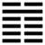

Thủy Địa Tỷ (比 bǐ)
Sư là đám đông, trong đám đông người ta gần gũi nhau, liên lạc với nhau, cho nên sau quẻ Sư là quẻ Tỉ (tỉ là gần gũi, liên lạc).
Chúng ta để ý: quẻ này Khảm trên, Khôn dưới, ngược hẳn với quẻ trước Khôn trên, khảm dưới.
Thoán từ:
比 吉 ． 原 筮, 元 永 貞, 无 咎 ． 不 寧 方 來, 後 夫 凶 ．
Tỉ cát. Nguyên phệ, nguyên vĩnh trinh, vô cữu.
Bất ninh phương lai, hậu phu hung.
Dịch: Gần gũi thì tốt. Bói lần thứ nhì mà được như lần đầu (nguyên phệ) rất tốt, lâu dài, chính thì không có lỗi.
Kẻ nào ở chỗ chưa yên (hoặc gặp trắc trở) sẽ lại với mình (hoặc mình nên vời lại) l kẻ nào tới sau (trễ) thì xấu.
Giảng: Quẻ này là trên đất có nước, nước thấm xuống đất, đất hút lấy nước, cho nên có nghĩa là gần gũi, thân thiết, giúp đỡ nhau.
Lại thêm một hào dương cương, trung chính ( hào 5) thống lĩnh năm hào âm, có cái tượng ông vua (hay người trên) được toàn thể dân (hay người dưới) tin cậy, qui phục do lẽ đó mà gọi là “tỉ”. Nhưng hào 5 đó ở địa vị chí tôn nên phải thận trọng, tự xét mình kỹ càng (nguyên phệ) mà thấy có đủ những đức nguyên, vĩnh, trinh thì mới thật không có lỗi.
“Bất ninh phương lai”, Chu Hi giảng là trên dưới ứng hợp với nhau, chắc là muốn nói hào 5 (trên) và hào 2 (dưới), một dương một âm. Còn ba chữ “hậu phu hung” thì không sách nào cho biết là ám chỉ hào nào, có lẽ là hào trên cùng chăng?
Ý nghĩa các hào :
1.初 六 : 有 孚 比 之, 无 咎 ． 有 孚 盈 缶, 終 來 有 他 吉 ．
Sơ lục: Hữu phu, tỉ chi, vô cữu.
Hữu phu doanh phẫu, chung lai hữu tha cát.
Dịch: Hào 1, âm : (Mới đầu) có lòng thành tín mà gần gũi nhau thì không có lỗi. Nếu lòng thành tín nhiều như đầy một cái ảng thì có thêm điều tốt khác nữa.
2.六 二 : 比 之 自 內, 貞 吉 ．
Lục nhị: tỉ chi tự nội, trinh cát.
Dịch: Hào 2, âm: Tự trong mà gần gũi với ngòai, chính đáng thì tốt.
Giảng: hào này âm nhu, đắc trung và chính, ở nội quái, ứng hợp với hào 5 dương cương cũng đắc trung và chính ở ngoại quái, cho nên nói là tự trong mà gần gũi với ngoài. Hai bên thân nhau vì đạo đồng chí hợp (cùng trung, chính cả), chứ không phải vì 2 làm thân với bề trên để cầu phú quí, như vậy là chính đáng, không thất thân, nên tốt.
3.六 三 : 比 之 匪 人 ．
Lục tam: Tỉ chi phỉ nhân
Dịch: Hào 3 âm: Gần gũi người không xứng đáng.
Giảng: Hào này âm nhu, không trung không chính, chung quanh lại toàn là âm nhu, cho nên ví với người xấu, không xứng đáng.
4. 六 四 : 外 比 之, 貞 吉 ．
Lục tứ: Ngoại tỉ chi, trinh cát.
Dịch: Hào 4, âm: Gần gũi với bên ngoài (hào 5) giữ đạo chính thì tốt.
Giảng: hào âm ở ngôi 4 đắc chính,tốt hơn hào 3; lại ở gần hào 5, như vậy là thân với người hiền ( 5 trung và chính ) và phục tòng bề trên, cho nên tốt.
5.九 五 : 顯 比, 王 用 三 驅
Cửu ngũ: Hiển tỉ, vương dụng tam khu
Giảng: hào này ở ngôi chí tôn, dương cương mà trung chính, cho nên cả 5 hào âm (cả thiên hạ) đều phục tòng; đạo gần gũi như vậy, là rất quang minh. Ai tòng phục vua thì cứ tới, không tùng phục mà chống lại thì cứ rút lui, không ép ai cả; để cho mọi người tự do tới lui, cũng như đi săn, không bao vây cả bốn mặt mà chừa một mặt cho cầm thú thoát ra. Do đó người chung quanh được cảm hóa, không phải răn đe mà họ cũng giữ được đào trung chính như vua.
6. 上 六 : 比 之 无 首, 凶 ．
Thượng lục: tỉ chi vô thủ, hung.
Dịch: Hào trên cùng, âm: không có đầu mối để gần gũi, xấu.
Giảng: Hào âm này ở trên cùng bất trung, không sao gần gũi với những hào âm dưới được, thế là không có đầu mối, là vô thủy (thủ ở đây có nghĩa là thủy) mà vô thủy thì vô chung, cho nên xấu.
*
Quẻ này nói về phép nhóm bạn tìm thầy. Phải cẩn thận từ lúc đầu, thành tín, trung chính, vì đạo chứ không vì lợi. Và phải để cho tự do, không nên ép buộc.